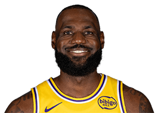
×2HK BASKETBALL ROAD TRIP · SINCE 2021
從香港出發挑戰全部 NBA 球館
經歷十多小時飛行，目的不只是打卡，而是親歷開賽一刻全場起立的震撼。30 個主場，我們將逐一走訪。
球館 Arenas visited
位 All-Star View the wall
現場記錄 · 只計當日有上場比賽
01 · THE MISSION
場館地圖
30 座球館，一張旅程地圖。柔光環代表親身到訪；其餘場館，將於未來逐一完成。選取已到訪的球隊標誌，即可查看完整城市筆記。
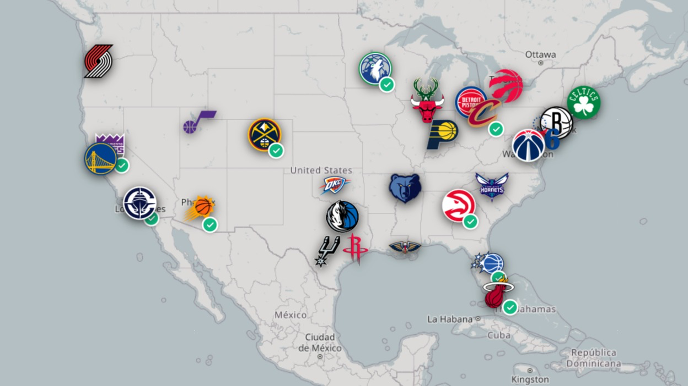
PERSONAL HALL OF FAME · 36
現場看過的
All-Star
All-Star Wall
現場看過 36 位 All-Star比賽
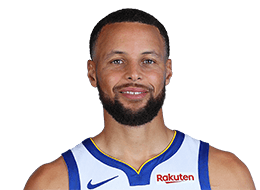
Stephen Curry
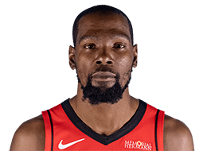
Kevin Durant
Nikola Jokić
Luka Dončić
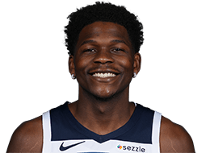
×2Anthony Edwards
×2
Donovan Mitchell
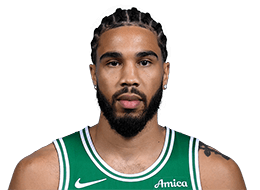
×2Jayson Tatum
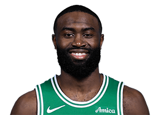
×2Jaylen Brown
Jimmy Butler
×3
Bam Adebayo
Ja Morant
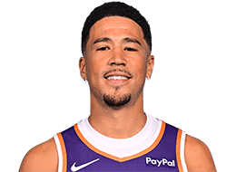
Devin Booker
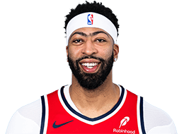
Anthony Davis
×2
Paolo Banchero
Trae Young
Chris Paul
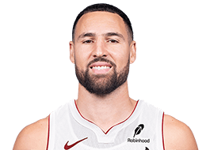
Klay Thompson
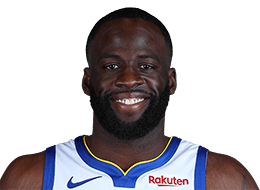
Draymond Green
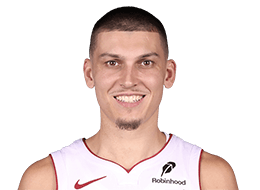
×2Tyler Herro
De’Aaron Fox
Domantas Sabonis
LaMelo Ball
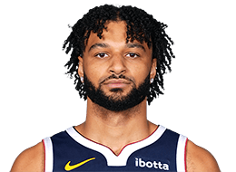
Jamal Murray
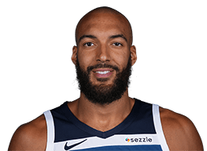
×2Rudy Gobert
×2
Julius Randle
×2
Jrue Holiday
Khris Middleton
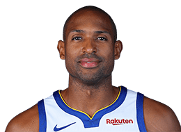
×2Al Horford
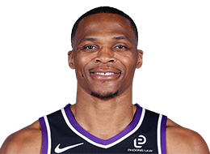
Russell Westbrook
Norman Powell
Jaren Jackson Jr.
×2
Darius Garland
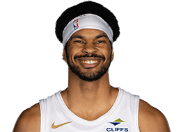
×2Jarrett Allen
×2
Evan Mobley

Mike Conley
以「曾經入選 NBA All-Star，並且當日有上場比賽」計算。
Giannis、Kawhi Leonard、Paul George 當日因傷未出賽，不計入。
Norman Powell 觀賽時尚未入選，其後成為 All-Star，故列入。
PLAYER HEADSHOTS · OFFICIAL NBA.COM ASSETS
02 · THE JOURNEY
追逐夢想歷程
由一句「不如親身前往觀賽」發展成每年的例行任務。目的地不斷改變，開賽前的期待始終如一。
202301
CHAPTER 2023
第1次 · 9 日 · 5 城市 · 10 個挑戰
一切源於 Gary 師兄分享自己飛到金州與聖安東尼奧看球的經歷。聽完之後，心裡開始湧現「自己也想試試看」的念頭。
All-Star 期間與 K 師兄聊天時，兩人一拍即合，決定認真探索「一趟旅程看多場比賽」的可能性。剛好當時有邁阿密的商務行程，於是索性以此為起點，開啟了人生第一趟真正的NBA球館之旅——出發離開香港時，完全不知道那9天會去那一個城市，那一場球賽。
正因如此，那趟旅程充滿兄弟一齊找回大學時期那種敢於挑戰未知的感覺。我們還特意為YouTube video 設計了10個挑戰（包括每個場館食一種特別食物、接到球場拋擲的T-shirt、及尋找一起看球賽的香港人），過程既緊張又好玩。
現在回想，第一趟旅程的感覺始終非常特別。
202402
CHAPTER 2024
1人行 · Game 7 · 熱血圓夢
2024年是第一次真正的一人旅程。
原本計劃有機會在麥迪遜廣場花園見證Knicks的Game 7，但尤記得Josh Hart對上76人的那記關鍵三分，直接讓系列賽在第六場結束。於是我臨時改變了計劃，工幹完成後，早上從邁亞美飛到紐約，停留一個十小時，吃到的牛排三文治記憶猶新，911博物館的參觀則讓人沉重又感動。晚上獨自飛往克里夫蘭，隔天在中午就看騎士魔術的Game 7，並且是NBA歷史上Game 7 最大的反勝，球場氣氛熱血沸騰。晚上獨自在之前Bill (Simmons) and Jalen (Rose)節目介紹的河邊吃了一個Pasta，回到酒店簡單直播，隔天早上又回到紐約，衝去市中心NBA store買了一些手信給一起拍片的隊友，幾小時後回到機場再飛回香港: 整趟行程出乎意料地順利。
我一直是個重視團隊的人，但這短短48小時的獨處，卻像是一次很新鮮的呼吸。一個人走在陌生城市、一個人趕飛機、一個人坐進球館，反而讓我更清楚感受到這趟旅程的意義。
202503
CHAPTER 2025
由1個球迷夢，變成與父母的回憶
當自己開始帶孩子、陪他做他喜歡的事情時，忽然意識到：也許父母也會覺得，一起參與孩子熱愛的事物是很自然的事。於是鼓起勇氣邀請他們一起參加這趟NBA之旅。
旅程從邁阿密開始。白天我處理工作，他們在城市裡散步放鬆；晚上媽媽一如既往住了熟悉味道的晚餐，一起在公寓用餐聊天。工作告一段落後，我們一起週六看了下午1點到4點在邁亞美的比賽，接著趕往機場搭乘同日晚上7:30的航班。四小時後，人已經到了明尼蘇達。飛機上還剛好看到Aaron Gordon金塊對快艇的經典致勝灌籃。睡了一晚，我們在早上步行到密西西比河，媽媽以前是教地理，她說從來沒有想像自己會真的見證這對橫跨美國大陸的河。吃了一個Juicy Lucy漢堡包後看木狼對湖人的球賽了！這場比賽是我暫時看過所有場數裏面，真的來到最後一刻出手才決定勝負的賽事。賽基本上由頭緊張到尾，而且球賽氣氛比起邁阿密好很多。木狼在第四節落後超過十分後，仍然能夠追上。Anthony Edwards 在我看球賽心目中，自然有了新的情意結，更加喜歡這個球員。
很感恩父母願意陪我一起「瘋」這一趟。現在有了孩子之後，這些能與父母共同擁有的時光，變得更加珍貴。
202604
CHAPTER 2026
40小時的兄弟行
真正出發前大概只剩20多天，Kyle 師兄忽然說想加入這趟旅程，能一起看多少場就看多少場。結果我們真正碰面的時間，是星期五晚上7點在奧蘭多球館前，Play-in tournament：魔术对黄蜂。黃蜂不爭氣，這場比賽魔術由第一節領先 20 分，基本上一直輕鬆拉開，就擊退了黃蜂。看完比賽後在酒店稍作休息，凌晨4點就搭Uber趕往機場，5點到機場一起吃早餐，8點飛丹佛。抵達後先吃午餐，下午就投入一場節奏極快、水準極高的木狼對金塊比賽。
看完球後我幾乎立刻睡著，一直睡到晚上9點被Kyle叫醒去吃晚餐。吃完又繼續睡，凌晨3點起來剪片、發布影片，5點再起床，6點準備上YouTube直播，7點吃早餐，接著趕去機場分道揚鑣——我飛洛杉磯準備回港，他則繼續前往聖安東尼奧，看Wembanyama的季後賽處子戰。
執筆時才算一算，我們真正在一起的時間大概少於40小時。但就是這短短的時間，在Uber上、在飛機上、在球館裡的對話與經歷，都讓人覺得特別難得。誰知道以後還有沒有機會再這樣瘋狂一次？所以更珍惜他願意臨時加入的那份衝動。
202705
CHAPTER 2027
規劃中
2027年，想第一次挑戰季後賽第二輪甚至分岸決賽。
目前已有一兩位朋友初步表示有興趣一起去。東岸的選擇較多，也相對有吸引力。會不會是第三次現場看LeBron，地點選在費城？還是去波士頓，感受一下經典球館的氛圍？又或者願意付出更高成本，去紐約看球？印第安納的團隊籃球風格，是否也值得專程飛一趟？
很多可能性都還在討論與想像之中。唯一可以確定的是，這趟旅程依然會保持「準備充分，但保留即興空間」的節奏。
你會幾享受一個瘋狂NBA季後賽之旅？
三個TenTalk親身經歷嘅情境，想像你自己會點揀。
此測試只供娛樂及旅程構想參考，並非科學性格分析或專業旅遊建議。
你似乎會享受一個充滿臨時改道、跨城航班、天氣變化及不規則休息時間嘅NBA季後賽旅程。對你而言，行程變化未必係麻煩，反而係旅程最值得記住嘅部分。只要有機會現場見證重要比賽，你願意接受一定程度嘅混亂。
TenTalk親身經歷過以上三個情境，最後每一次都選擇繼續衝。好高興知道我哋原來係同路人！
你願意為一場重要比賽調整行程，但同時會考慮體力、城市體驗及實際成本。你可能最享受一個有核心計劃、但預留少量彈性嘅NBA旅程。
你比較享受穩定、舒適及完整嘅旅程。比起短時間內追逐多場比賽，你更重視休息、城市體驗及清晰嘅行程安排。呢種玩法並唔代表睇波熱情較少，只係你希望整段旅程，而唔係單一比賽，成為一個美好回憶。
你亦可以考慮由賽程較穩定、票價一般較容易預算嘅Regular Season開始規劃NBA現場之旅。
瘋狂季後賽睇波計數機
根據你揀選嘅比賽、城市、座位及酒店安排，估算每人旅程成本。
費用明細 · 每人中央估算
你嘅選擇及計算假設
內陸主要交通段數等於城市數，包含最後一站返回原入境城市嘅主要接駁。主要城市住宿晚數及比賽場數按城市比例分配。中央估算以原始金額計算；明細取整至HKD100，範圍取整至HKD500。
保留你嘅選擇，調整個別選項後再估算。
以上只屬一般旅程規劃估算，並非報價。實際費用會因賽程、對賽組合、門票需求、出發日期、航班、酒店、匯率及個人選擇而有重大差異。
03 · FIELD NOTES
觀賽攻略
由機票、門票、酒店到末班車，內容不談理想化數字，只提供香港球迷真正實用的現場觀賽攻略。
01
常規賽 vs 季後賽
REGULAR SEASON
選對場次，降低輪休風險
留意球星「負荷管理」。優先選擇宿敵對決或重要卡位戰，主力上陣機率通常更高。
PLAYOFFS
氣氛與強度，一次到頂
票價雖然較高，但每一個回合都全力以赴。若是首次現場觀看 NBA，季後賽體驗將令人畢生難忘。
現場見證
LEBRONCURRYDURANTJOKIĆ
02
航班
- 先鎖定主航線季後賽賽程變數大，先處理 HK–US 長途機票，再補內陸段。
- 西岸樞紐LAX 或 SFO 轉機選擇多，適合串連加州與西岸城市。
- 東岸樞紐JFK / EWR 落地，再按比賽城市安排內陸機票或火車。
03
購買門票
SeatGeek介面最清晰，可選擇顯示已包括手續費的價格。
Ticketmaster官方合作平台，標準可靠，但手續費較高。
StubHub香港信用卡支援較好，適合最後衝刺。
04
選擇座位
- 籃底低位近距離感受球員體型、速度與爆發力。
- 中場高位視野完整，最適合觀察戰術與全場走位。
- 球員通道如希望與球員擊掌或索取簽名，應提早入場並確認主、客隊通道位置。
05
住宿
「賽後能夠步行返回酒店，已可算是一種 VIP 體驗。」
- 步行距離優先散場交通非常擠塞。
- 安全第一優先選擇市中心商業區，晚上避免偏僻路段。
- 免費取消待賽程落實後，再確定最終住宿安排。
06
預算
常規賽中下層座位參考；季後賽預算約需 × 2–3。
| 城市 | 預估 HKD |
|---|---|
| Atlanta | ~ $1,400 |
| Phoenix | ~ $1,800 |
| Sacramento | ~ $1,400 |
| Los Angeles | ~ $2,500+ |
| New York | ~ $2,800+ |
07
城市行程
ATL
Atlanta
World of Coca-Cola、Georgia Aquarium，再配合一場主場賽事，足以構成充實的兩日一夜城市行程。
PHX
Phoenix
可於 Desert Botanical Garden 欣賞仙人掌；時間充裕時，更可延伸前往 Sedona 感受紅岩景觀。
04 · ABOUT ME
About Me | Justen Li (@thetentalk)
故事始於1996年。當年見證 John Stockton 帶領 Utah Jazz 躋身 NBA Finals，那份最純粹的籃球熱愛，就此陪伴我走過近30年。後來，這份熱愛更帶我從香港出發，飛越半個地球，親身踏進一座又一座 NBA 球館。
2021年，TenTalk YouTube頻道正式啟航。我開始透過廣東話，與大家分享NBA新聞、賽事觀察及球隊分析。自2023年起，TenTalk再由螢幕走進現場，將美國不同NBA主場的觀賽體驗、球館氣氛、城市故事及實用攻略，逐一帶回香港。
我本身是一個很「J」的人，習慣事前做好資料搜集，將行程和各種可能性規劃清楚。但這幾年的NBA旅程，卻意外成為我練習「P」的過程。不是毫無準備地冒險，而是在充分準備之後，仍然願意接受賽程變化、臨時改道，以及旅途中各種無法預計的驚喜。
對我而言，這些旅程從來不只是觀看一場球賽。它們更像是繁忙生活中的一次釋放，讓我暫時離開日常工作與家庭角色，全心投入自己真正熱愛的事物；亦讓我重新找回中學、大學時期那種與朋友並肩探索、挑戰未知的青春感覺。
這就是我的 TenTalk NBA Bucket List：不只是完成所有NBA球館的清單，而是記錄沿途遇見的人、一起走過的兄弟、臨時改變的計劃，以及那些可能一生只會出現一次的籃球回憶。 🏀🌎
到 YouTube 觀看故事